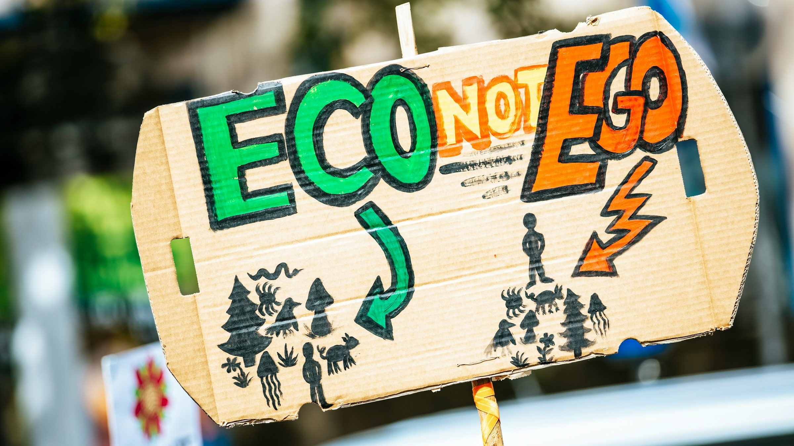

Le changement climatique

Peu de phénomènes dans l'histoire des sciences ont fait l'objet d'un consensus aussi solide et aussi bien documenté que le changement climatique d'origine humaine. Depuis le début de l'ère industrielle, les concentrations de gaz à effet de serre dans l'atmosphère ont augmenté à un rythme sans précédent dans les archives géologiques, entraînant un réchauffement global dont les conséquences sont déjà perceptibles sur tous les continents. Pourtant, malgré des décennies de recherche, la désinformation demeure tenace et l'action politique reste largement insuffisante au regard de l'urgence documentée.
Cette section aborde le changement climatique sous plusieurs angles : son histoire scientifique et politique, les mécanismes physiques qui le gouvernent, les données actuelles sur l'état du climat, les projections pour les prochaines décennies, et enfin les gestes concrets que chacun peut poser. L'objectif n'est pas de culpabiliser ni de catastrophiser, mais de donner les outils pour comprendre et agir à sa juste mesure, tout en gardant un regard critique sur les dynamiques systémiques qui conditionnent l'ampleur du problème.
Historique du changement climatique
La compréhension scientifique de l'effet de serre remonte au milieu des années 1800, avec les travaux pionniers de Joseph Fourier, Eunice Newton Foote et John Tyndall. Ce n'est toutefois que dans les années 1900, grâce aux mesures continues de Charles David Keeling à partir de 1958 et aux premiers témoignages retentissants de scientifiques devant le Congrès américain dans les années 1980, que la question est entrée dans l'arène politique mondiale. Des accords comme le Protocole de Montréal (1987), le Protocole de Kyoto (1997) et l'Accord de Paris (2015) ont depuis structuré la réponse internationale, avec des succès très variables selon les pays et les secteurs.
Gaz à effet de serre
Le dioxyde de carbone (CO2), le méthane (CH4) et le protoxyde d'azote (N2O) sont les principaux gaz à effet de serre d'origine humaine. Leurs sources varient considérablement : combustion d'énergies fossiles, élevage, agriculture, déforestation, enfouissement des déchets. Leur capacité à piéger la chaleur dans l'atmosphère varie également de manière importante d'un gaz à l'autre, ce que l'on mesure à travers le concept de potentiel de réchauffement global. Cette section présente, données à l'appui, l'évolution des concentrations atmosphériques et la répartition des émissions par secteur à l'échelle mondiale.
État actuel du climat
Le réchauffement climatique observé depuis l'ère préindustrielle dépasse désormais 1,1 °C en moyenne mondiale, selon le sixième rapport d'évaluation du GIEC publié entre 2021 et 2023. Ce chiffre, en apparence modeste, se traduit par des perturbations profondes des systèmes naturels : fonte accélérée des glaces polaires et des glaciers continentaux, élévation du niveau des mers, intensification des événements météorologiques extrêmes, acidification des océans. Cette section présente les indicateurs clés de l'état du climat à travers des visualisations interactives issues de sources scientifiques de référence.
Scénarios futurs
Les modèles climatiques du GIEC projettent différentes trajectoires de réchauffement selon les niveaux d'émissions futurs. Dans le scénario le plus pessimiste, le réchauffement pourrait dépasser 4 °C d'ici la fin du siècle par rapport aux niveaux préindustriels. Dans le meilleur scénario crédible, il serait limité à environ 1,5 °C si des réductions d'émissions massives et rapides sont mises en oeuvre dès maintenant. La différence entre ces trajectoires n'est pas qu'une question de degrés : elle représente des millions de personnes exposées aux inondations côtières, aux sécheresses prolongées, aux migrations forcées et aux crises alimentaires.
Quoi faire au quotidien ?
Réduire son empreinte carbone individuellement est utile, mais cette question mérite d'être abordée honnêtement. Le concept d'empreinte carbone personnelle a été popularisé par une campagne publicitaire de BP en 2004, dans une stratégie délibérée de déplacement de la responsabilité des grandes entreprises vers les consommateurs. Cela ne veut pas dire que les choix individuels sont sans importance : alimentation, transport et chauffage représentent des postes d'émissions réels et modifiables. Cette section présente des données concrètes sur l'impact de différents gestes du quotidien, tout en maintenant un regard critique sur le cadrage politique qui entoure la question de la responsabilité climatique.